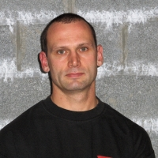

L'équipe
Sifu Rudi Vaneetvelde
 Après plusieurs années de pratique quotidienne de boxe thaïlandaise, kick boxing et boxe anglaise, j'ai fait la connaissance du Wing Tsun. Cherchant depuis longtemps un système de combat permettant de se défendre efficacement contre plus " fort " et plus " agressif " que soi, le Wing Tsun mit fin à mes attentes. Passionné d'arts martiaux et d'efficacité, je n'hésitais pas à me rendre quatre fois semaine en Allemagne pour apprendre le système de combat. Mon travail fût récompensé lorsqu'après trois ans de pratique, Sifu Michaël Schwarz me confia la responsabilité d'enseigner à Namur. Depuis janvier 2001, j'oeuvre à faire découvrir aux namurois le système Wing Tsun. Actuellement 4è grade technicien, je continue toujours mon apprentissage Wing Tsun et Escrima avec Sifu M. Schwarz. Pratiquant régulièrement l'Asthanga Yoga, je puis inclure dans mes écoles des exercices spécifiques d'étirement pour assouplir et maintenir le corps en bonne santé. De même, l'élève Wing Tsun se familiarisera au maniement d'armes blanches grâce aux entrainements d'Escrima pratiqué dans l'école namuroise. Janvier 2011 , après 12 ans de pratique assidue et 10 années d'enseignements , je reçu de Sifu Schwarz , le titre de Sifu . Ce titre fait de moi , le premier Sifu wallon de l'EWTO . Une nouvelle page se tourne car les nouveaux élèves namurois vont être mes premiers élèves directs et je vais veillez à les enseigner au mieux pour valoriser encore plus le Wing Tsun en Wallonie et honorer ce titre.
Rudi Vaneetvelde
Murielle Magotteaux
J'ai découvert le Wing Tsun en mai 2003 par hasard. Je cherchais un système d’auto-défense efficace et accessible aux femmes, quelle que soit leur corpulence. Etant plus faible qu'un homme, nous sommes des "proies faciles". C'est ainsi qu'en venant assister au cours, j'ai fait la connaissance d'un art martial complet où l'on apprend à se défendre contre les agressions que l'on retrouve malheureusement tous les jours dans les journaux. J'ai découvert un système qui permet de se défendre efficacement contre des personnes plus fortes en utilisant simplement leur force et en y ajoutant la nôtre. En 2005, j'ai suivi les stages d'assistant-instructeur qui me permettent de donner cours quand notre Sihing est absent. Depuis mai 2007, je vais également les dimanches en Allemagne, suivre des cours chez notre Sifu Michaël Schwarz tout en continuant les cours avec notre Sihing. Depuis septembre 2008, après avoir suivi une formation adéquate, je m'occupe de donner des cours aux enfants dès l'âge de 7 ans. J'espère que le WingTsun vous apportera autant qu'il m'a apporté dans la vie quotidienne et vous souhaite la bienvenue dans cet art martial.
Murielle Magotteaux
Laurent Simon
Depuis mon enfance, je suis passionné par les arts martiaux. J’ai d’ailleurs pratiqué le judo pendant 9 ans dans différents clubs de la région namuroise. De par mon vécu personnel et maintenant professionnel, j’ai décidé de me mettre à la recherche d’un système intelligent d’auto-défense, efficace en toutes circonstances. Ce système devait bien entendu pouvoir être utilisé selon les principes d’opportunité, de proportionnalité et de légalité, régis par la loi sur la légitime défense. J’ai donc, en plus du judo, étudié pendant quelques années le jiu-jitsu, le taekwondo et l’hapkido. Ces systèmes, bien qu’efficaces, ne m’ont pas convaincu totalement, étant donné qu’ils sont difficilement à la portée de personnes ne possédant pas une condition physique minimale. Après quelques recherches sur Internet, j’ai décidé d’essayer le WingTsun, système qui m’était alors totalement inconnu. J’ai suivi le premier cours fin 2007 et me suis rendu compte de son efficacité en pratiquant avec l’instructeur, qui deviendra finalement mon Sihing, Sifu Rudi Vaneetvelde. Après 2 ans de pratique à raison d’environ 6 heures par semaine, j’ai eu l’opportunité de suivre une formation pour devenir assistant-instructeur. Cette formation me permet d’encadrer les élèves débutants et ainsi de revoir les bases du système, tout en continuant mon entraînement 2 heures supplémentaires chaque semaine. De plus, faire partie de cette grande famille m’offre la possibilité de parfaire ma pratique en suivant de temps à autre des cours particuliers avec Sifu Rudi et des stages en Allemagne encadrés par des instructeurs parmi les plus hauts gradés de cet art martial. Si vous désirez apprendre à vous défendre efficacement contre un adversaire plus fort physiquement et acquérir une grande confiance en vous dans les situations difficiles, je vous conseille d’étudier le WingTsun, que je considère comme la référence en matière d’auto-défense.
Laurent Simon